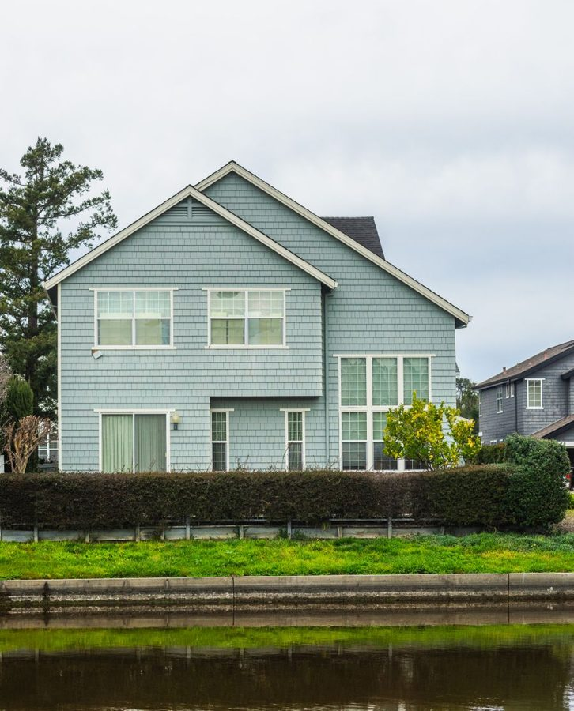

Solo presupuestos que valen la pena.

Hacer un presupuesto cuesta media jornada. Responder a quien solo busca precio cuesta la misma media jornada. Helvaro pregunta primero, para que tu equipo solo trabaje en solicitudes que llevan a algo.
Agenda una auditoría de trabajoDos tipos de pérdida
La primera es visible: horas dedicadas a solicitudes de gente que solo quería un precio orientativo. La segunda es más silenciosa y más cara: presupuestos que salieron y que nadie reclamó nunca. En la mayoría de empresas ese segundo montón es mayor que el primero.
Lo que hace tu agente
- Preguntar antes de que hagas nadaTipo de proyecto, plazos, ubicación y presupuesto. Quien no responde a eso tampoco iba a ser cliente.
- Filtrar por viabilidadSi la solicitud encaja con tu zona, tu planificación y tu tipo de trabajo. Lo que no encaja recibe una respuesta cortés en lugar de un presupuesto.
- Agendar una visita a obraLas solicitudes serias reciben al momento un hueco libre en la agenda del jefe de obra adecuado.
- Reclamar presupuestosUna semana después del envío, tu agente pregunta cómo va. No una vez, sino hasta que haya respuesta o el cliente se descuelgue claramente.
- Volver a ofrecer presupuestos antiguosUn presupuesto de hace ocho meses no es una causa perdida. A menudo fue un aplazamiento, no una cancelación.
Extra para reformas. El agente de visualización crea imágenes de un inmueble en distintos estilos arquitectónicos. Un cliente que duda ve lo que es posible antes de que haya un presupuesto sobre la mesa.
Así suena en una solicitud
Tipo, tamaño, ubicación, plazos y presupuesto. Todo lo que necesitas antes de hacer nada.
Lo que nota tu equipo
Menos horas en cálculos que no llevan a nada, y un seguimiento que sigue en marcha mientras tu equipo está en obra. Cada conversación sigue siendo legible en el panel, y tomas el control cuando quieras.
Señala el trabajo. Te diremos con honestidad si se puede.
Una auditoría de trabajo de veinte minutos. Te vas con un primer flujo, o con el motivo por el que no encaja en tu caso.
Agenda tu auditoría de trabajo